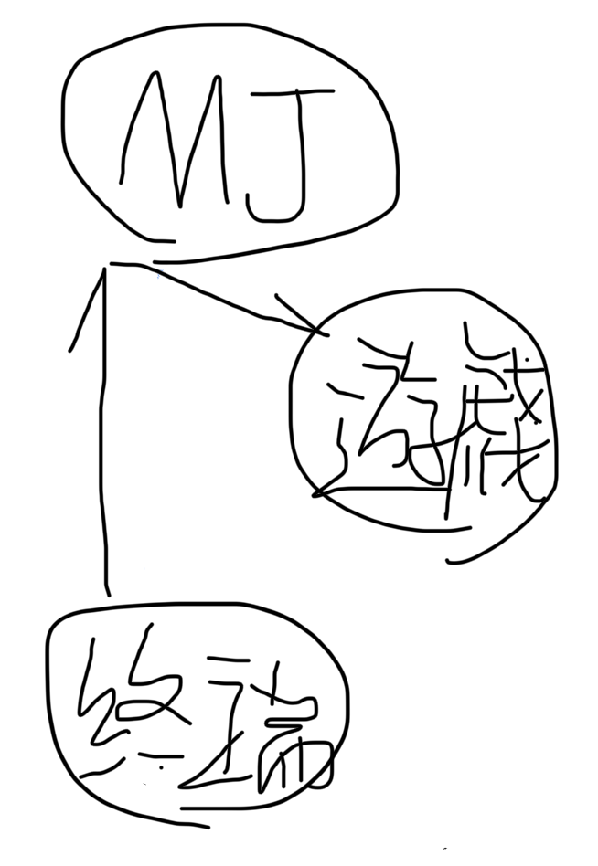
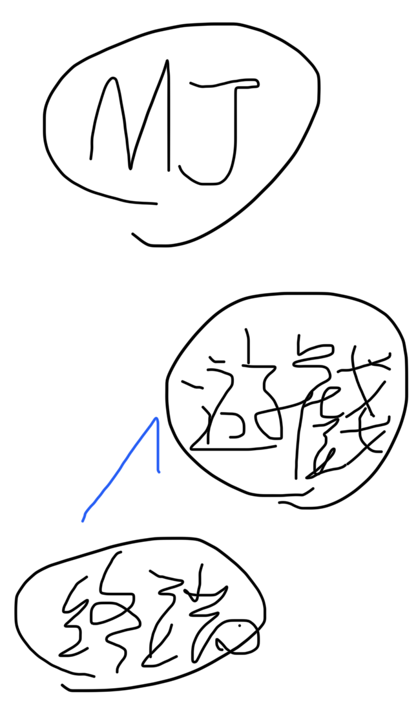
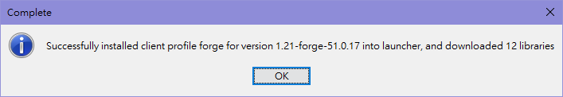
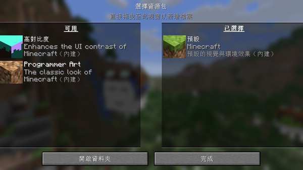

正版驗證方式開啟遊戲（連線啟動）{連接Mojang(mc官方)伺服器動}

無正版驗證方式開啟遊戲（離線啟動）{不連接Mojang(mc官方)伺服器動}
．可支援離線啟動的啟動器：TLauncher（簡稱ＴＬ）
至官網選擇正確系統版本安裝，並跟隨系統指示。
影片教學(2023/12/29版)首先須有以下必備模組及列車包（安裝模組教學請至模組安裝教學，列車包安裝教學請至列車包安裝教學）
Immersive Railroading
Universal Mod Core(Immersive Railroading之依賴項)
Track API(Immersive Railroading之依賴項)
WorldEdit
[IR] Taiwan Train Pack For Immersive Railroading(列車包 請至curseforge下載)
於遊戲內多人模式中新增服務器，並於伺服器地址中填入下列地址：m0902290661.aternos.me點我複製
加入遊戲！！
至外部第三方模組網站(ex:curseforge,modrinth等等)下載你需要的模組對應的啟動器和版本
前往 Forge 網站，左邊 Minecraft Version 列表中選擇版本。
點擊 Download Latest 方格中的 Installer，建議下載最新版較不會遇到問題。
接著會跳轉到廣告頁面，等待倒數後，點擊 SKIP 按鈕即可完成下載。
開啟從 Forge 下載回來的安裝檔案。
選擇 Install client 選項，安裝位置使用預設即可，如果當初 Minecraft 安裝時是選擇其他位置，則需要更改成相對應的位置。
出現這個通知訊息代表安裝完成。

安裝完成通知訊息
開啟 Minecraft Launcher，切換到安裝檔頁面，點擊新安裝檔。
版本選擇剛才安裝的 Forge 版本，如果沒有出現可以重開 Minecraft Launcher 試試，名稱和遊戲資料夾可以根據自己需求做更改。
點擊開始遊戲，先讓 Minecraft 產生 Mod 需要的資料夾。
Minecraft 啟動完畢後，點擊模組按鈕，然後點擊開啟模組資料夾，將從 CurseForge 下載回來的 Mod 丟進去。
重新啟動遊戲就會看到 Mod 增加，建立一個新的世界，就會看到 Mod 安裝成功囉。
...此安裝方式教學敬請期待...
此條目目前只提供TL啟動器之離線教學，更多內容請稍待
TL裝模組教學影片(2024/1/13版)在 TLMods 的「模組包」頁籤建立一個模組包資料夾（建議取名跟模組包一樣），然後執行遊戲一次，讓資料夾建立起來。
開啟資料夾目錄 (C:/< 使用者 < 使用者名稱 < AppData < Roaming < .minecraft){此目錄只適用Windows系統}，或按 TLMods 按鈕（一個資料夾圖示）
從 .minecraft 資料夾，找到「versions」資料夾，然後選擇你剛建立的資料夾。
把模組放入。
至curseforge下載[IR] Taiwan Train Pack For Immersive Railroading v9.0(本服務器支援版本，直接點選連結頁面之下載按鈕)
將下載的壓縮檔放入資源包檔案夾中 相關條目:資源包放置教學
按完成後稍待片刻進行加載(1.12.2版本沒有加在進度條，會卡在一個畫面不動，請耐心等待。)
在遊戲首頁點擊「選項」按鈕，然後點擊「資源包」按鈕。
之後你會看到資源包選擇頁面。你需要將要加入的資源包拖入遊戲視窗。你也可以點擊「開啟壓縮包資料夾」按鈕，將資源包放入開啟的資料夾。開啟的資料夾的路徑為.minecraft/resourcepacks。

Java版資源包選擇頁面1.21.8版
在左側應該會顯示你加入的資源包。將滑鼠懸浮在資源包圖示上，點擊向右的箭頭，它將會移動至右側。
如果你安裝了多個資源包，你可以點擊上下箭頭調整資源包的載入順序。
擊「完成」按鈕。等待遊戲載入資源完畢即可。
©許元洧製作 最後更新時間：2025/8/1